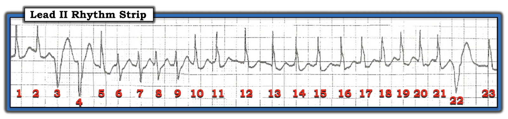
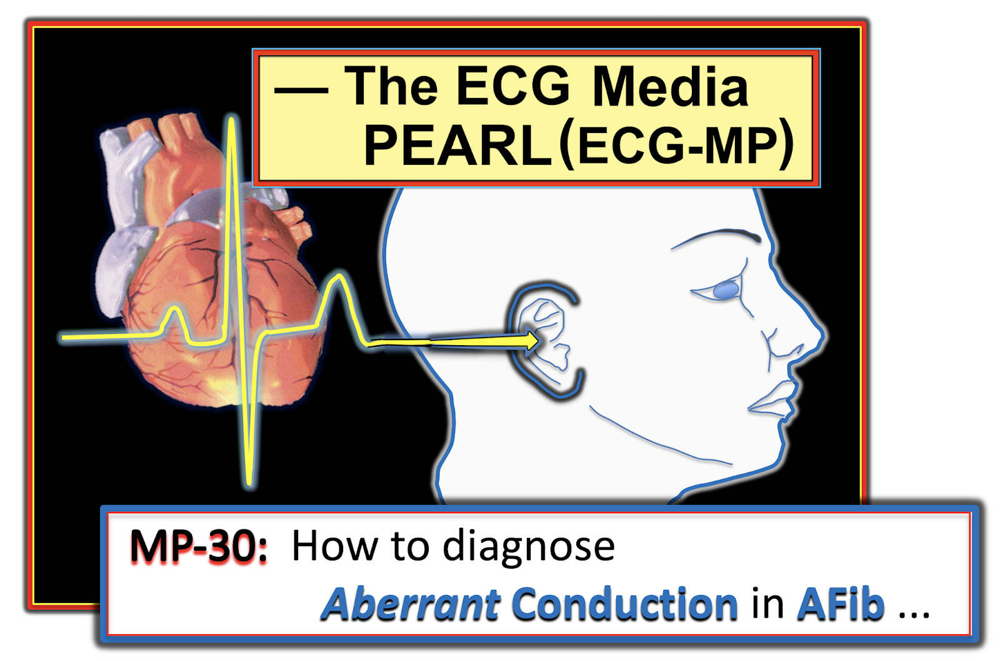
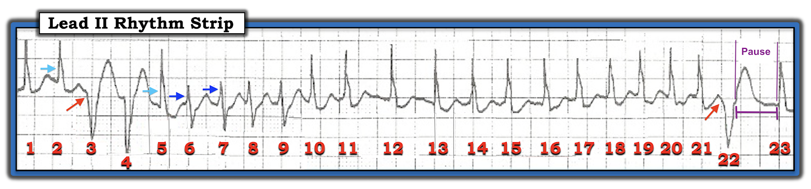

ECG Blog #213 (ECG MP-30) — Dẫn truyền lệch hướng trong AFib?
Dải nhịp chuyển đạo II trong Hình-1 được ghi từ một bệnh nhân có huyết động ổn định.
- Đây là nhịp GÌ?


Cách tiếp cận CỦA TÔI với nhịp trong Hình-1:
Có RẤT NHIỀU điều đang diễn ra trong Hình-1. Cách tôi tiếp cận nhịp này như sau:
- Tôi thấy dễ nhất là mỗi khi có nhiều thứ “đang diễn ra” — hãy tìm trước tiên nhịp nền (underlying rhythm). Để làm việc này — tôi quay lại “Cách tiếp cận Ps, Qs & 3R” mà tôi ưa dùng (Đã ôn trong ECG Blog #185).
- Phức bộ QRS gặp nhiều nhất trong Hình-1 là một sóng R hẹp dương — vì vậy các nhát tôi tập trung vào để xác định nhịp nền là nhát #1, 2; 5; 10 đến 21; và 23. DỄ NHẤT là hoãn việc đánh giá các nhát trông khác biệt (tức là nhát #3,4 — 6,7,8,9 — và — #22) cho tới sau khi đã xác định được nhịp nền!
Tập trung vào các nhát #1, 2; 5; 10 đến 21; và 23:
- Như vừa đề cập — phức bộ QRS của hình thái QRS gặp nhiều nhất này là hẹp (tức là rõ ràng không quá NỬA ô lớn = thời gian ≤0.10 giây).
- LƯU Ý #1: Lý tưởng nhất — chúng ta nên có một bản ghi 12 chuyển đạo đầy đủ để hỗ trợ đánh giá thời gian và hình thái QRS. Dù vậy — do bệnh nhân ổn định về huyết động, và hình thái QRS ở chuyển đạo II này có vẻ hẹp và trông bình thường, tôi cho rằng tạm thời có thể an toàn khi tiếp tục với giả định phức bộ QRS của nhịp nền là hẹp.
- Sóng P xoang bình thường không có (tức là KHÔNG thấy dấu hiệu sóng P dương ở chuyển đạo theo dõi II này).
- Do đó không có sóng P xoang nào có thể liên quan (Related) với các phức bộ QRS lân cận.
- Nhịp này nhanh (Rapid) — và rõ ràng không đều (Regular). Khoảng R-R trung bình trong loạt 12 nhát liên tiếpcó hình thái QRS gặp nhiều nhất này (tức là xét các nhát #10 đến 21) — không quá 2 ô lớn — tương ứng với tần số thất gần 150/phút.
Do đó — nhịp nền trong Hình-1 có vẻ là AFib với đáp ứng thất nhanh (tức là QRS hẹp — không có sóng P — tần số nhanh gần 150/phút — không đều hoàn toàn trong loạt nhát liên tiếp từ #10 đến #21).
- Việc còn lại là xác định nguyên nhân của các nhát #3, 4 và 22 — và — các nhát #6 đến 9.
=======================================
LƯU Ý #2: Tới đây, một số bạn đọc có thể muốn nghe ECG Audio PEARL dài 7:40 phút trước khi đọc Suy nghĩ của tôi về các khía cạnh khác của nhịp trong Hình-1. Bạn cứ thoải mái xem lại bất cứ lúc nào những suy nghĩ cuối cùng của tôi về nhịp này (nằm bên dưới ECG MP-30).
=======================================


ECG Media PEARL #30 (Audio 7:40 phút) hôm nay — LÀM THẾ NÀO để phân biệt dẫn truyền lệch hướng (aberrant conduction) với ngoại tâm thu thất — khi nhịp nền là AFib?
- LƯU Ý #3: Để ôn lại hiện tượng Ashman được nhắc đến trong Audio Pearl này — Mời xem ECG Blog #70. Việc vận dụng hiện tượng Ashman trong AFib được ôn lại trong ECG Blog #71.
=======================================
QUAY LẠI với nhịp trong ca hôm nay:
Chúng ta đã xác định nhịp nền là AFib nhanh. Việc còn lại là 2 hình thái QRS khác mà chúng ta cần đánh giá (Hình-2).
- Hình thái #1 = 3 phức bộ QS (âm) rộng ( = nhát #3, 4 và 22).
- Hình thái #2 = 4 phức bộ RS liên tiếp ( = nhát #6,7,8,9).


HÌNH THÁI #1: Tôi rất nghi ngờ các nhát #3, 4 và 22 là PVC (ngoại tâm thu thất — Premature Ventricular Contractions):
- Phức bộ QRS của 3 nhát âm này trông cực kỳ rộng (nhất là nhát #3 và 22) — và hình thái QRS của các phức bộ QS này khác hẳn so với hình thái hoàn toàn dương (sóng R) của các phức bộ QRS trong nhịp AFib nền.
- ĐIỂM THEN CHỐT (PEARL) #1: Vì phần lớn các nhát thất khởi phát từ một vị trí trong tâm thất nằm ngoài hệ thống dẫn truyền — các nhát thất này không chỉ có hình thái QRS khác biệt — mà còn thường cho thấy độ dốc của sóng lệch QRS ban đầu bị chậm lại . Đó là vì dẫn truyền ban đầu xuất phát từ cơ thất chậm hơn dẫn truyền của các xung động trên thất — vốn được tăng tốc sau khi ra khỏi nút AV khi hệ thống dẫn truyền trong thất còn nguyên vẹn. Chúng ta thấy rõ nhất độ dốc giảm này ở nhánh đi xuống ban đầu của QRS ở nhát #3 và 22 (các mũi tên ĐỎ trong Hình-2).
- ĐIỂM THEN CHỐT (PEARL) #2: Do dẫn truyền ngược dòng từ các nhát thất — PVC thường được theo sau bởi một khoảng ngưng sau ngoại tâm thu ngắn, ngay cả khi nhịp nền là AFib. Điều này khác với tình huống thường gặp ở dẫn truyền lệch hướng trong AFib — khi đó tính không đều hoàn toàn của nhịp AFib vẫn tiếp diễn suốt, hoàn toàn không bị ảnh hưởng dù có hay không có dẫn truyền lệch hướng. Mặc dù không thấy khoảng ngưng sau ngoại tâm thu sau nhát #4 trong Hình-2 — nhưng rõ ràng có khoảng ngưng sau ngoại tâm thu sau nhát #22 (các đường TÍM trong Hình-2). Lưu ý rằng khoảng ngưng ngắn giữa nhát #22-23 này là khoảng ngưng dài nhất trong bản ghi — và rõ ràng nó làm thay đổi kiểu nhịp AFib nền.
HÌNH THÁI #2: Ngược với các nhát #3,4,22 — tôi rất nghi ngờ các nhát #6, 7, 8 và 9 là một loạt nhát trên thất có dẫn truyền lệch hướng.
- Phức bộ QRS của 4 nhát liên tiếp này (có hình thái RS hai pha) trông không quá rộng (nếu có rộng ra thì cũng rất ít, ở chuyển đạo theo dõi đơn lẻ này).
- Tính không đều hoàn toàn của nhịp AFib nền trong Hình-2 không hề bị thay đổi bởi sự thay đổi hình thái của 4 nhát này.
- Không có khoảng ngưng sau ngoại tâm thu sau nhát #9.
- Hướng ban đầu và độ dốc của nhánh lên sóng R ở các nhát #6 đến 9 gần như giống hệt nhánh lên sóng R dốc nhanh của 16 nhát dẫn truyền bình thường trong nhịp AFib nền (cả mũi tên XANH nhạt và XANH đậm trong Hình-2 đều cho thấy sóng R đi lên nhanh với độ dốc tương tự).
- Có một lý do giải thích TẠI SAO các nhát #6 đến 9 có thể dẫn truyền lệch hướng — đó là khoảng ghépngắn nhất trong bản ghi này xuất hiện ngay trước nhát trông khác biệt đầu tiên (tức là khoảng ghép ngắn nhất nằm giữa nhát #5-6).
ĐIỀU CỐT LÕI: Nhịp nền trong ca hôm nay là AFib nhanh. Có ba hình thái QRS khác nhau trên dải nhịp chuyển đạo II này. Ngay cả khi không có thêm chuyển đạo theo dõi — dải nhịp chuyển đạo II đơn lẻ này gợi ý các nhát # 3,4,22 là PVC — và các nhát #6,7,8,9 là các xung động AFib được dẫn truyền lệch hướng.
- Vì AFib là nhịp nền trong ca này — chúng ta mất đi đặc điểm chẩn đoán là nhận diện một sóng P đến sớm (không có sóng P trong AFib). Do đó — tôi không thể chắc chắn 100% về nguyên nhân của các nhát trông khác biệt chỉ từ dải nhịp một chuyển đạo này.
- Dùng thêm các chuyển đạo theo dõi (hoặc ghi điện tâm đồ 12 chuyển đạo trong lúc nhịp nhanh) — có thể giúp ích rất nhiều cho việc đánh giá thêm nhịp này.
- Về mặt lâm sàng — có lẽ không quan trọng các nhát #6 đến 9 là một cơn NSVT (nhịp nhanh thất không bền bỉ — Non-Sustained Ventricular Tachycardia) hay AFib với dẫn truyền lệch hướng. Dù thế nào, “chủ đề” của nhịp trong Hình-2 vẫn là AFib nhanh, kèm ít nhất vài ngoại tâm thu thất. Chừng nào bệnh nhân còn ổn định — xử trí với mục tiêu kiểm soát tần số nhanh của AFib này cộng với điều chỉnh các yếu tố thúc đẩy tiềm tàng, có thể là tất cả những gì cần làm để cải thiện tình trạng lâm sàng.
==============================
Các bài ECG Blog liên quan đến ca hôm nay:
- ECG Blog #185 — Cách tiếp cận hệ thống trong đọc nhịp.
- ECG Blog #70 — Ôn lại những điều cơ bản về hiện tượng Ashman.
- ECG Blog #71 — Hiện tượng Ashman có chính xác trong AFib không?
- ECG Blog #211 — Ôn lại chi tiết TẠI SAO dẫn truyền lệch hướng xảy ra (và tại sao lệch hướng dạng RBBB là thể thường gặp nhất).
- ECG Blog #212 — Minh họa việc vận dụng hiện tượng Ashman — và việc đánh giá QRS giãn rộng trong bối cảnh nhịp nền là AFib nhanh.